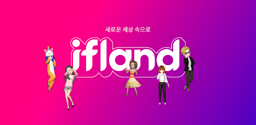
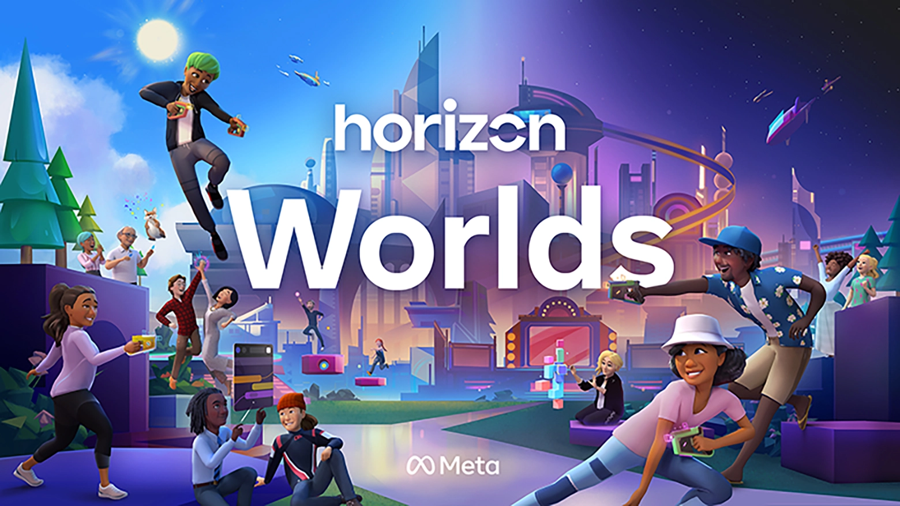
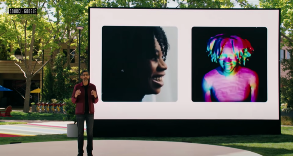
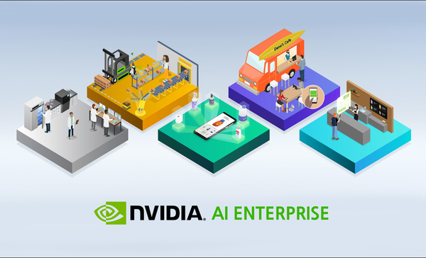
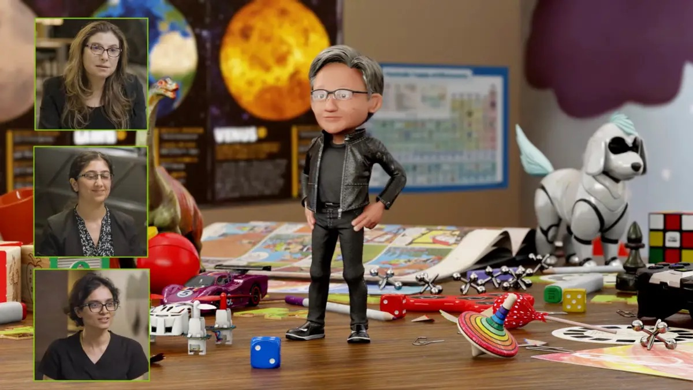
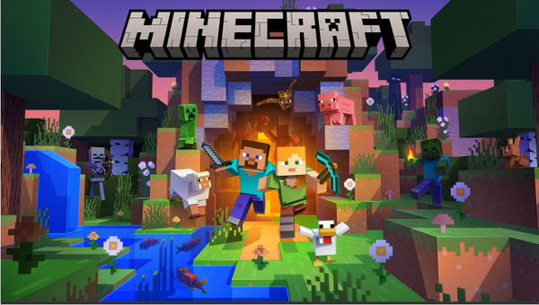
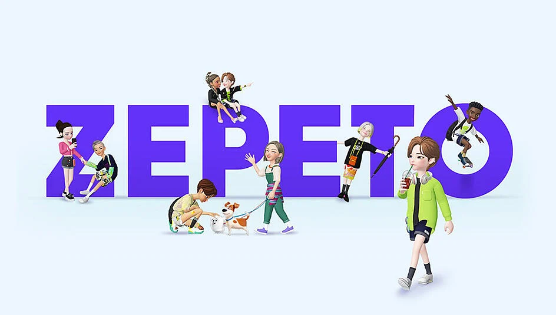
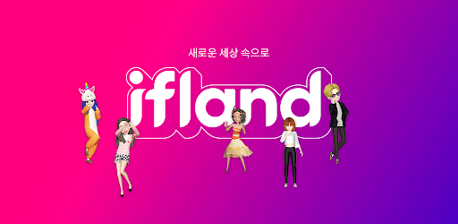
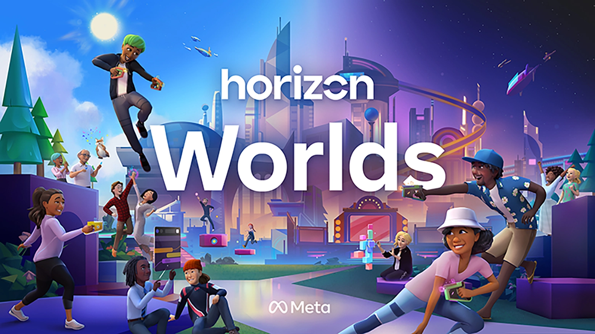
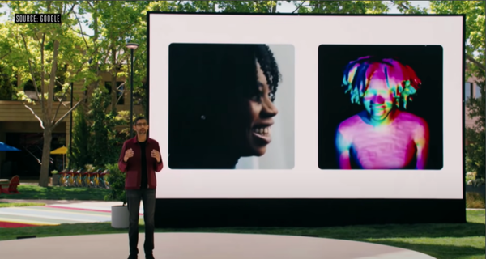
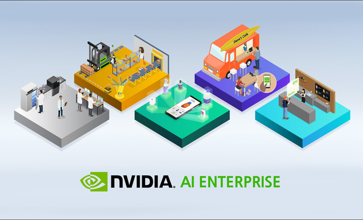
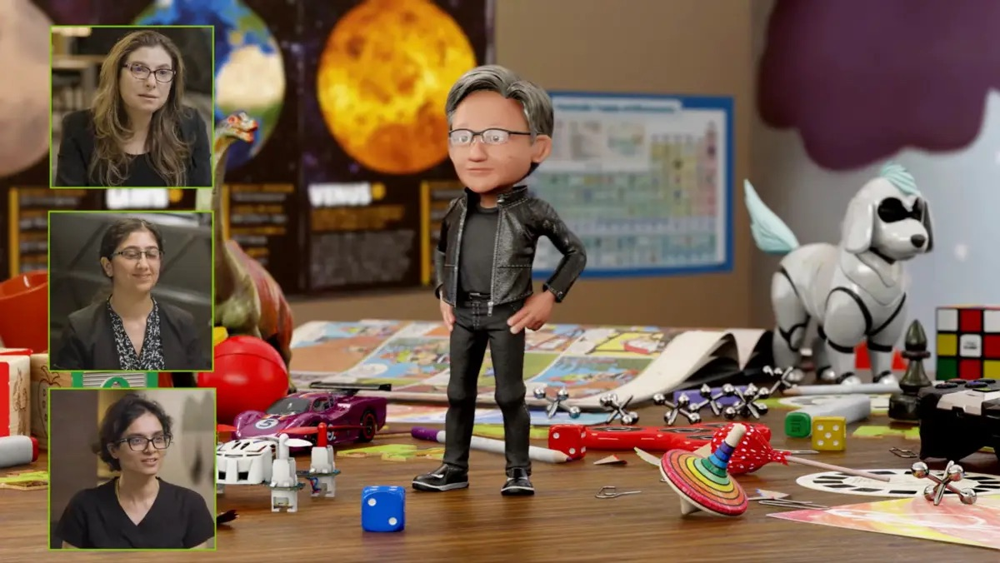
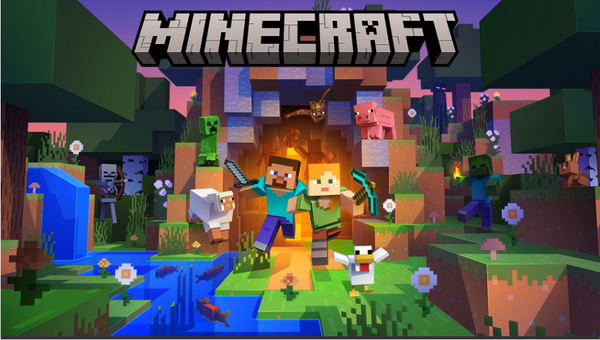
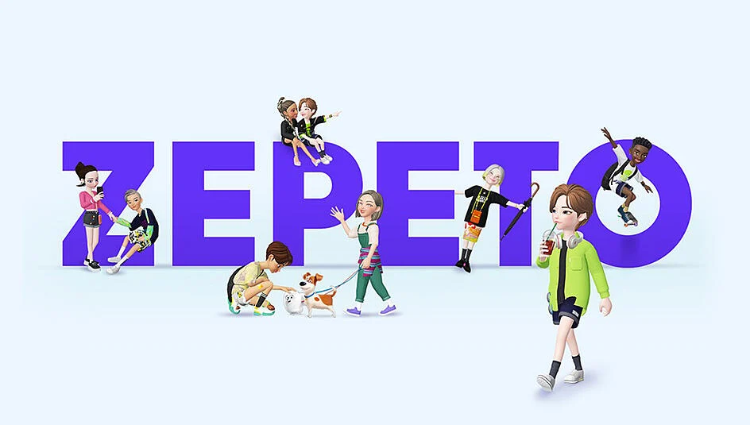
저는 항상 저의 선교는 무엇일까 기도하고 고민해왔어요. 그러던 와중 찾은 저의 선교의 도구는 바로 메타버스에요. 지금까지 VR, AR 등 가상현실을 구현하는 기술을 통해 만들어진 플랫폼은 많이 있었는데, 어떤 사람들은 이러한 기술로 만들어진 플랫폼의 성공을 의심하며 부정적인 시각으로 메타버스를 봐요. 하지만 저는 메타버스가 시공간을 초월하는 플랫폼으로써 현재 대부분의 사람이 인터넷을 통해 세계를 보는 것처럼, 곧 메타버스를 통해 세계를 볼 것이라고 생각해요. 저는 언젠가 시공간을 초월하는 가상 세계가 현실 세계만큼, 아니 그보다 더 영향을 끼치는 시대가 올 것이라고 확신하고, 그 시대가 왔을 때 속수무책으로 따라가는 사람이 아니라 선한 영향력을 끼치는 사람이 되고 싶어요. 저의 큰 꿈을 위한 지금의 작은 목표는 제가 속해있는 사회인 한동대에서 메타버스를 단순히 플랫폼으로 구현하는 정도가 아니라 실제 학생들이 활발히 사용하여 스마트폰 이전의 삶을 상상할 수 없듯이 메타버스 이전의 삶을 상상할 수 없을 정도로 편리하고, 유용하고, 재밌는 한동 메타버스를 만들고 졸업하는 것이에요. 제가 현재 속해 있는 메타버스 학회는 2022년 2학기에 한동 메타버스를 구현하는 것을 목표로 하고 있는데 저는 한걸음 더 나아가서 거기에 결제같은 경제시스템을 도입하고 싶어요. 현재 학생들이 많이 사용하지만 카카오톡, 에브리타임 등 여러 플랫폼으로 분산된 기능을 한 곳에 모아 학생들이 편하게 사용하고, 또 즐길 수 있는 한동대 메타버스를 졸업하기 전 구현하고 싶어요. 제가 하나님께서 가장 원하시는 길로 인도받을 수 있도록 기도부탁드립니다!
메타버스 플랫폼
이미지 출처: http://www.kmnews1.com/news/articleView.html?idxno=165
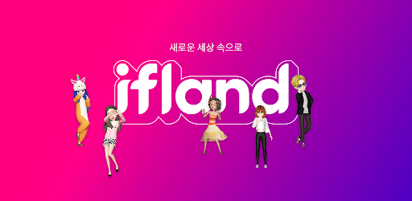
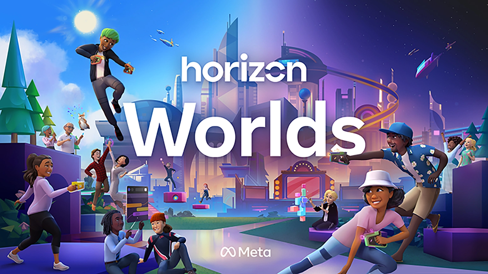
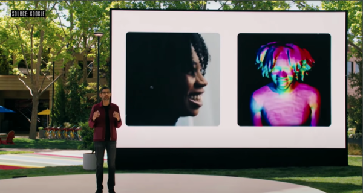
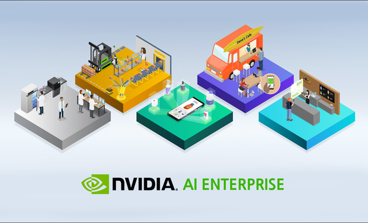
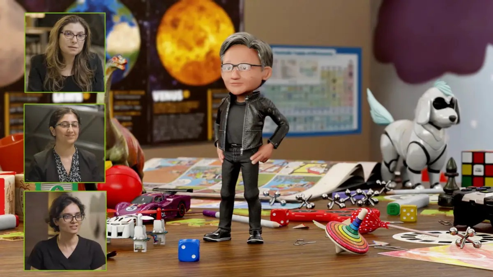
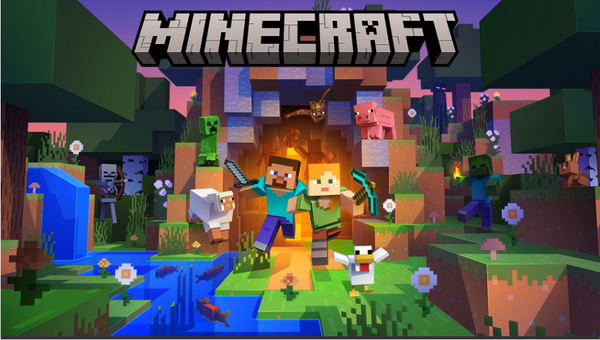
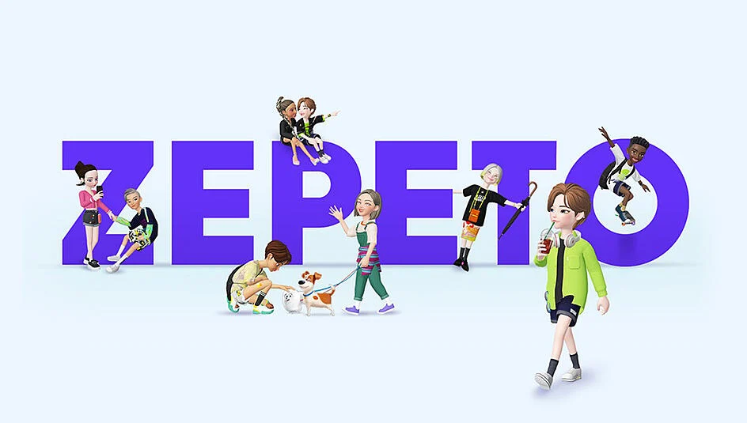